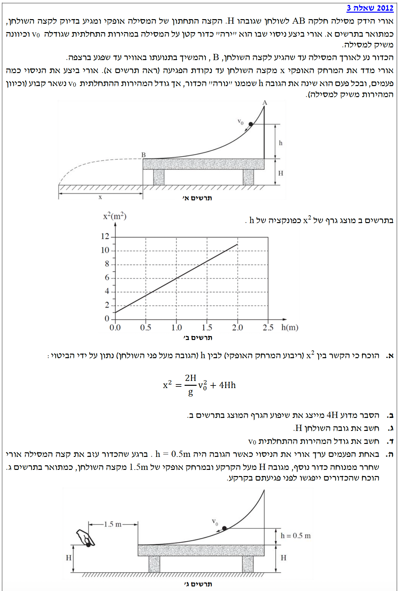

ברוכים הבאים! כאן נלמד צעד אחר צעד כיצד לגשת לשאלה בקינמטיקה ושימור אנרגיה, לנתח גרפים ולהגיע לפתרון בצורה ברורה ומובנית.

תמונת השאלה (question-image.png) לא נמצאה בנתיב המצופה.
סעיף א': הוכחת הקשר בין \( x^2 \) ל- \( h \)
1. מה נתון
מסילה \( AB \) חלקה (אין חיכוך).
גובה המסילה (ההפרש בין \( A \) לשולחן) מסומן ב- \( h \).
מהירות התחלתית בכניסה למסילה משיקה ומסומנת ב- \( v_0 \).
גובה השולחן מעל הרצפה הוא \( H \).
מרחק אופקי שהכדור עובר מנקודת העזיבה \( B \) ועד הפגיעה ברצפה מסומן ב- \( x \).
תאוצת הכובד \( g \), כיוונה תמיד כלפי מטה. נגדיר את ערכה המוחלט לצרכי פתרון כ- \( g = 10 \, \mathrm{m/s^2} \).
2. מה מחפשים
אנו נדרשים להוכיח מתמטית את המשוואה הבאה המקשרת בין המרחק האופקי בריבוע לבין גובה המסילה:
\[ x^2 = \frac{2H}{g}v_0^2 + 4Hh \]
3. נוסחאות ועקרונות בשימוש
\( E_k = \frac{1}{2}mv^2 \)\( U_G = mgh \)\( W \)לא משמרים\( = \Delta E \)\( x = x_0 + v_0 t + \frac{1}{2} a t^2 \)
עקרונות: כיוון שהמסילה חלקה, עבודת הכוחות הלא משמרים (הנורמל שתמיד מאונך לתנועה) שווה לאפס (\( W \)לא משמרים\( = 0 \)). לכן, האנרגיה המכנית הכוללת \( E \) נשמרת לאורך התנועה על המסילה. לאחר מכן, הגוף מבצע זריקה אופקית שבה נשתמש בנוסחת המקום-זמן עבור כל ציר בנפרד: ציר אופקי (בו התאוצה מתאפסת) וציר אנכי (נפילה חופשית בתאוצה \( a = g \)).
4. הצבה ופתרון
שלב I: תנועה על המסילה (מציאת המהירות \( v_B \))
נגדיר את גובה השולחן (נקודה \( B \)) כרמת הייחוס לאנרגיה הפוטנציאלית הכובדית \( (U_G = 0) \). האנרגיה בנקודת ההתחלה (גובה \( h \)) שווה לאנרגיה בנקודה \( B \):
נצמצם את המסה \( m \), נכפול פי 2, ונבודד את ריבוע המהירות בנקודה \( B \):
\[ v_B^2 = v_0^2 + 2gh \]
שלב II: זריקה אופקית מנקודה \( B \) לרצפה
נגדיר מערכת צירים: ראשית הצירים בנקודה \( B \). ציר \( x \) חיובי שמאלה, וציר \( y \) חיובי כלפי מטה. לפיכך, בנקודה \( B \) מתקיים \( x_0=0, y_0=0 \). תאוצת הכדור היא תאוצת הכובד כלפי מטה, ולכן במערכת הצירים שבחרנו תאוצת הגוף \( a_y = +g \).
הכדור נזרק אופקית שמאלה, כלומר למהירות ההתחלתית בזריקה אין רכיב אנכי: \( v_{0y} = 0 \), ורכיב המהירות האופקי הוא המהירות שמצאנו קודם: \( v_{0x} = v_B \).
נרכיב משוואת מקום-זמן עבור ציר ה-\( y \) למציאת זמן התנועה \( t \) עד ההגעה לרצפה (המתרחשת כאשר \( y = H \)):
שימו לב לאלגנטיות הפיזיקלית של הפתרון: שילבנו כאן שני מודלים שונים (שימור אנרגיה וקינמטיקה בדו-מימד). ההפרדה הברורה בין השלבים ובין הצירים הופכת בעיה מורכבת לרצף פעולות הגיוני. אל תשכחו שעבור זריקה אופקית, זמן השהייה באוויר תלוי אך ורק בגובה הנפילה \( H \) (ולא במהירות האופקית)!
סעיף ב': משמעות שיפוע הגרף
1. מה נתון
גרף ליניארי ("קו ישר") של המשתנה \( x^2 \) (בציר האנכי) כפונקציה של \( h \) (בציר האופקי).
המשוואה שקיבלנו בסעיף א' היא: \( x^2 = \frac{2H}{g}v_0^2 + 4Hh \). נסדר אותה מעט כדי שתתאים למבנה המוכר של קו ישר \( y = m \cdot x' + b \) (הוספנו תג \( x' \) כדי להבדיל מה-\( x \) של המרחק האופקי):
ניתן לראות בבירור כי המשתנה התלוי שלנו (בציר האנכי של הגרף) הוא \( x^2 \), והמשתנה הבלתי תלוי (בציר האופקי של הגרף) הוא \( h \).
הקבוע המכפיל את המשתנה הבלתי תלוי (\( h \)) הוא בהגדרה השיפוע של הגרף הליניארי. במקרה זה, המקדם של \( h \) הוא \( 4H \), ולכן זהו ערך השיפוע.
מכיוון שמשוואת התנועה היא בצורה ליניארית \( y = m \cdot x' + b \), המקדם של משתנה ציר ה-x (שהוא \( h \)) נותן את השיפוע, שערכו הוא \( 4H \).
זיהוי והתאמה של ביטוי פיזיקלי למבנה גיאומטרי של גרף הוא מיומנות קריטית בבגרויות. שימו לב גם לנקודת החיתוך \( b \), שהיא במקרה שלנו הביטוי \( \frac{2H}{g}v_0^2 \) - היא תעזור לנו בהמשך!
ראשית, עלינו למצוא את ערך השיפוע המספרי מתוך הגרף הנתון. נבחר שתי נקודות נוחות על הגרף (כאלו ש"יושבות" בדיוק על חיתוכי קווי הרשת). ניתן לזהות את הנקודות הבאות מהתבוננות בתרשים ב':
נשים לב ליחידות השיפוע: היחידות של ציר ה-\( y \) (שהוא \( x^2 \)) הן \( \mathrm{m^2} \). היחידות של ציר ה-\( x \) (שהוא \( h \)) הן \( \mathrm{m} \). לכן יחידות השיפוע הן \( \frac{\mathrm{m^2}}{\mathrm{m}} = \mathrm{m} \).
על פי סעיף ב', הוכחנו כי תיאורטית השיפוע שווה ל- \( 4H \). נשווה ביניהם:
כאשר בוחרים נקודות לחישוב שיפוע, בחרו תמיד נקודות רחוקות ככל האפשר אחת מהשנייה. פעולה זו מקטינה את שגיאת הקריאה היחסית שלנו מהגרף! בנוסף, חובה להראות את בחירת הנקודות וחישוב השיפוע בבירור.
סעיף ד': חישוב מהירות התחלתית \( v_0 \)
1. מה נתון
נקודת החיתוך עם הציר האנכי מתוך הגרף: כאשר \( h=0 \), הערך הוא \( x^2 = 1.0 \, \mathrm{m^2} \).
גובה השולחן שמצאנו: \( H = 1.25 \, \mathrm{m} \).
תאוצת הכובד \( g = 10 \, \mathrm{m/s^2} \).
2. מה מחפשים
את גודל המהירות ההתחלתית \( v_0 \) שאיתה התחיל הכדור לנוע בנקודה \( A \).
3. נוסחאות ועקרונות בשימוש
נשתמש בנקודת החיתוך של המשוואה הליניארית שמצאנו בסעיף ב', \( b \).
4. הצבה ופתרון
ראינו בסעיף ב' כי נקודת החיתוך התיאורטית עם הציר האנכי (כלומר כאשר \( h=0 \)) היא הביטוי:
\[ b = \frac{2H}{g}v_0^2 \]
מתוך הגרף, נוכל לקרוא ישירות כי נקודת החיתוך היא בערך \( 1.0 \, \mathrm{m^2} \). נציב את הנתונים הידועים במשוואה ונבודד את \( v_0 \):
חשבו על המשמעות הפיזיקלית של החיתוך עם הציר! המצב שבו \( h=0 \) מתאר כדור שנורה אופקית מנקודה \( B \) (מבלי "לגלוש" לאורך מסילה). גם במצב זה יש לו מהירות התחלתית אופקית (שהיא בדיוק \( v_0 \)) ולכן הוא עדיין ינחת במרחק אופקי כלשהו השונה מאפס.
סעיף ה': מפגש שני הכדורים
1. מה נתון
עבור הכדור הראשון (כדור א'): הערך של \( h = 0.5 \, \mathrm{m} \).
בדיוק ברגע שבו כדור א' עוזב את השולחן מנקודה \( B \) (נקרא לרגע זה \( t=0 \)), משוחרר ממנוחה כדור שני (כדור ב').
מיקום שחרור כדור ב': גובה \( H = 1.25 \, \mathrm{m} \) (אותו גובה התחלתי של הנפילה כמו כדור א'), ובמרחק אופקי קבוע של \( x_2 = 1.5 \, \mathrm{m} \) מקצה השולחן.
כל שאר הנתונים ממשיכים איתנו: \( v_0 = 2 \, \mathrm{m/s} \), \( g = 10 \, \mathrm{m/s^2} \).
2. מה מחפשים
להוכיח באורח חד משמעי ששני הכדורים ייפגשו באוויר (לפני פגיעתם בקרקע).
3. נוסחאות ועקרונות בשימוש
\( x = x_0 + v_0 t + \frac{1}{2} a t^2 \)
עקרונות: על מנת ששני גופים ייפגשו, קואורדינטת ה-\( x \) שלהם וגם קואורדינטת ה-\( y \) שלהם חייבות להיות זהות באותו רגע בדיוק. נוכיח שגובהם זהה תמיד, ולאחר מכן נוכיח שכדור א' חולף על פני קו האורך האנכי שבו נופל כדור ב' (כלומר מגיע ל-\( x=1.5\text{m} \)) לפני שהוא פוגע ברצפה. משוואת התנועה הכללית תשמש אותנו בנפרד לכל ציר. את הביטוי לזמן הנפילה מגובה \( H \) איננו לוקחים מדף הנוסחאות, אלא מפיקים שוב ממשוואת התנועה בציר האנכי, כפי שכבר עשינו בסעיף א'.
4. הצבה ופתרון
חלק א': ניתוח ציר Y (הציר האנכי) לשני הכדורים
שני הכדורים מתחילים את תנועתם האנכית באותו גובה התחלתי (גובה השולחן \( H \)). שניהם מתחילים את התנועה האנכית ללא מהירות התחלתית אנכית (\( v_{0y}=0 \)): כדור א' נזרק אופקית וכדור ב' משוחרר ממנוחה. שניהם נופלים תחת אותה תאוצת כובד \( g \).
לכן, משוואת המיקום האנכי של שניהם היא זהה לחלוטין בכל רגע \( t \):
\[ y_1(t) = y_2(t) = \frac{1}{2}gt^2 \]
(הנחנו ש-\( y=0 \) בגובה השולחן וכיוון הציר כלפי מטה)
מסקנה ביניים: אם הכדורים יימצאו באותו מקום אופקי, הם בהכרח ייפגשו, שכן הגובה שלהם תמיד זהה.
חלק ב': האם כדור א' יגיע למרחק האופקי של כדור ב' לפני הפגיעה בקרקע?
נחשב ראשית את זמן הנפילה הכולל של הכדורים עד לרצפה (\( H = 1.25 \, \mathrm{m} \)). זהו בדיוק אותו פיתוח שביצענו בסעיף א' עבור התנועה האנכית: מכיוון שלשני הכדורים יש \( v_{0y}=0 \) והם מתחילים מגובה \( H \), נקבל בזמן הפגיעה בקרקע:
נשווה את הזמנים: הזמן שלוקח לכדור א' להגיע למרחק האופקי הדרוש למפגש (\( 0.40 \, \mathrm{s} \)) קטן מהזמן שלוקח לו (ולכדור ב') להגיע לקרקע (\( 0.50 \, \mathrm{s} \)).
\( t_{reach} < t_{fall} \)\((0.40 \, \mathrm{s} < 0.50 \, \mathrm{s})\)מכיוון שכדור א' חולף במיקום האופקי של כדור ב' בעוד שניהם עדיין באוויר, ומכיוון שגובהם תמיד זהה בכל רגע נתון, הכדורים בהכרח ייפגשו באוויר. מש"ל.
זוהי וריאציה על בעיית הפיזיקה הקלאסית המכונה לעיתים "קוף וצייד". העיקרון היפהפה כאן הוא שתנועות בצירים שונים אינן תלויות זו בזו (עקרון אי-התלות). לשני הכדורים יש אותה "היסטוריה" בציר האנכי, ולכן כדור הארץ מאיץ אותם כלפי מטה בדיוק באותו אופן בלי קשר למהירותם האופקית!
נוסח השאלה המקורית
תמונת השאלה (question-image.png) לא נמצאה בנתיב המצופה.